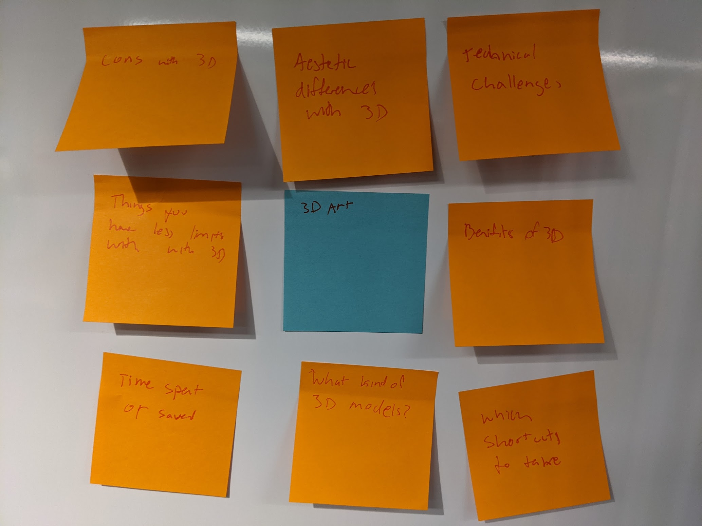
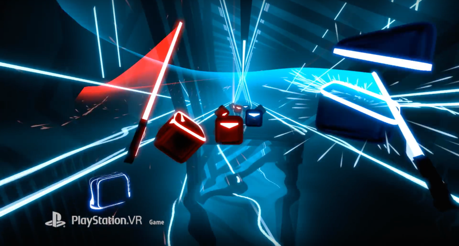
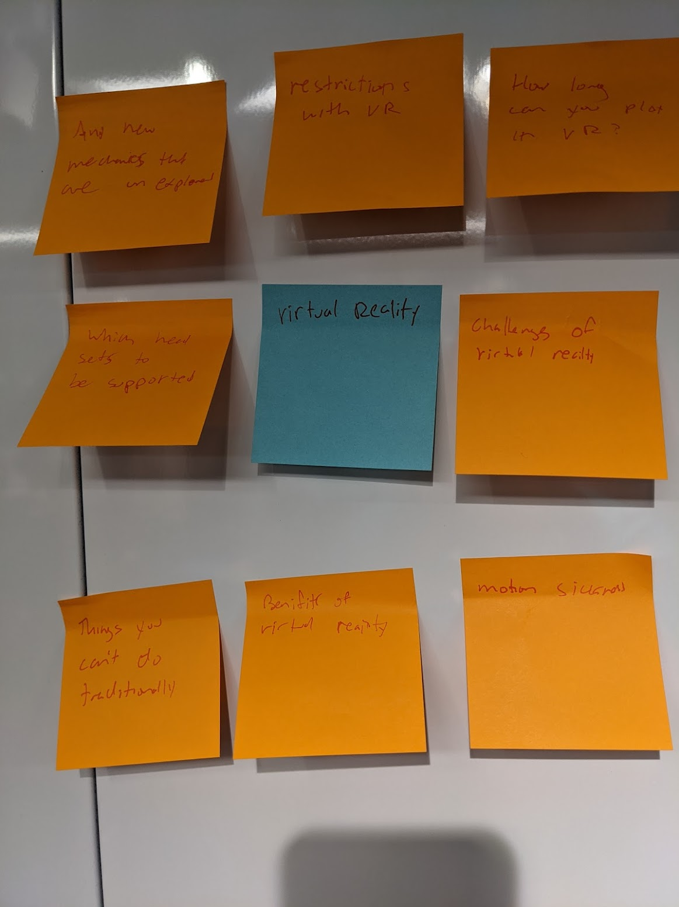
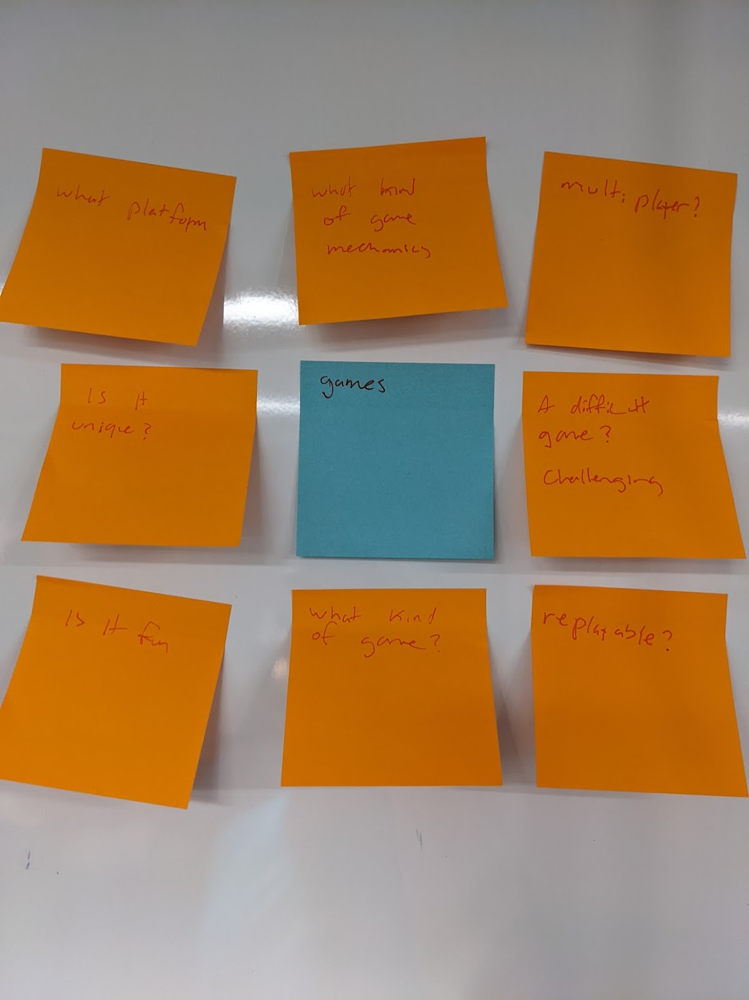
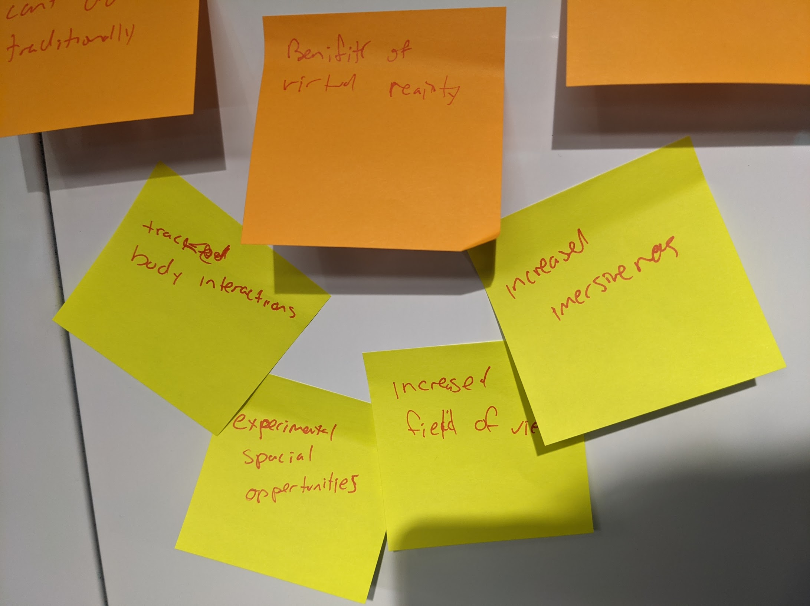
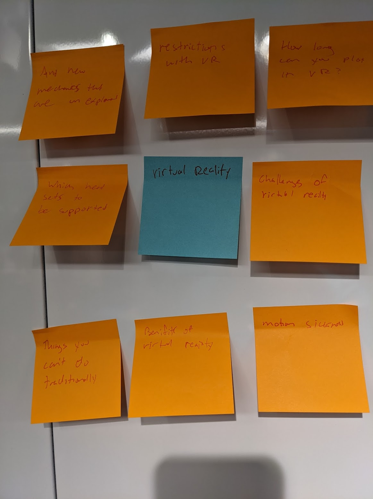
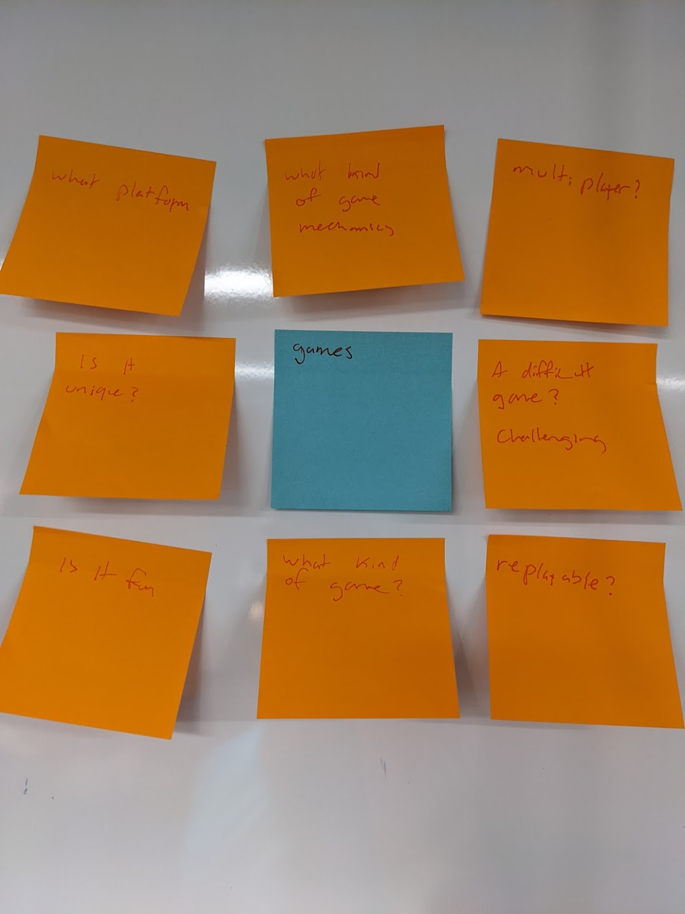
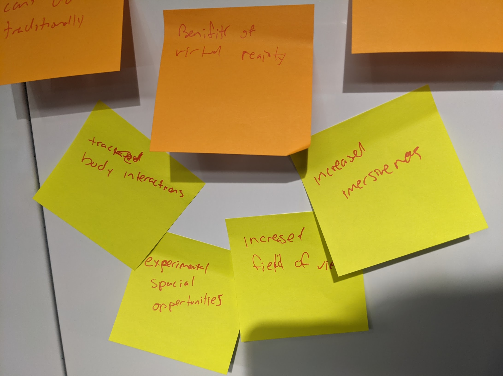

Pre-Thesis Week 2 Refinement
Suit Animation from JonPhan on Vimeo.
  
Main issue I have with VR games is the discomfort with long play times, space required, and motion sickness. To solve this problem, exciting bite sized gameplay should help. The most popular VR game out there right now is beatsaber. With a simple easy to understand game mechanic and quick to jump into style, it makes for a great game for people to pull out during parties or just a short session. Teleportation is another way to solve the space issue as well as the motion sickness issue using predetermined spots to maneuver to.

Replayability is an issue with games that are short and not as deep. To solve this, having a skill you can build up or randomized mechanics can greatly help. Another popular game trend that has been gaining popularity is the "Rouge style" which involves randomly generated environments and powerups making each run different. I think having a random setup out of say three for each of the scaling levels would help with that and a choice of synergistic power ups could help. For my example, if there were 8 levels and each one had 3 possible options, there would need to be 24 levels made. A pool of dozens of power ups would almost guarantee that no playthrough would be similar.


Main issue I have with VR games is the discomfort with long play times, space required, and motion sickness. To solve this problem, exciting bite sized gameplay should help. The most popular VR game out there right now is beatsaber. With a simple easy to understand game mechanic and quick to jump into style, it makes for a great game for people to pull out during parties or just a short session. Teleportation is another way to solve the space issue as well as the motion sickness issue using predetermined spots to maneuver to.

Replayability is an issue with games that are short and not as deep. To solve this, having a skill you can build up or randomized mechanics can greatly help. Another popular game trend that has been gaining popularity is the "Rouge style" which involves randomly generated environments and powerups making each run different. I think having a random setup out of say three for each of the scaling levels would help with that and a choice of synergistic power ups could help. For my example, if there were 8 levels and each one had 3 possible options, there would need to be 24 levels made. A pool of dozens of power ups would almost guarantee that no playthrough would be similar.

 I also wouldn’t want to do VR just for the sake of it, I think a crazy cool benefit to VR besides the immersiveness is the increased field of view as well as the interactivity you could have with where your hands and body are in relation to each other. One of my projects here at IDM used mocap to have interaction with where the hands were in relation to the shoulder, I have some ideas of using this concept to have the player do things like bring their hands together for a new weapon, or touch the floor for another ability.
While I work professionally in Unreal Engine, I usually just stick to the artistic side. During my time at IDM I have been able to really dive deeper into the Blueprint programming system as well as learn a lot more about programming in general. As for game design, I have only dabbled in my own homebrew board games but this project could really be a nice way for me to showcase my new skills alongside my old ones.
I also wouldn’t want to do VR just for the sake of it, I think a crazy cool benefit to VR besides the immersiveness is the increased field of view as well as the interactivity you could have with where your hands and body are in relation to each other. One of my projects here at IDM used mocap to have interaction with where the hands were in relation to the shoulder, I have some ideas of using this concept to have the player do things like bring their hands together for a new weapon, or touch the floor for another ability.
While I work professionally in Unreal Engine, I usually just stick to the artistic side. During my time at IDM I have been able to really dive deeper into the Blueprint programming system as well as learn a lot more about programming in general. As for game design, I have only dabbled in my own homebrew board games but this project could really be a nice way for me to showcase my new skills alongside my old ones.
home
while (!deck.isInOrder()) {
print 'Iteration ' + i;
deck.shuffle();
i++;
}
print 'It took ' + i + ' iterations to sort the deck.';